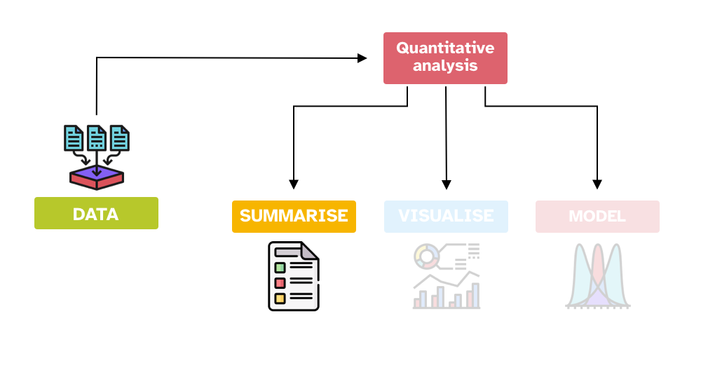
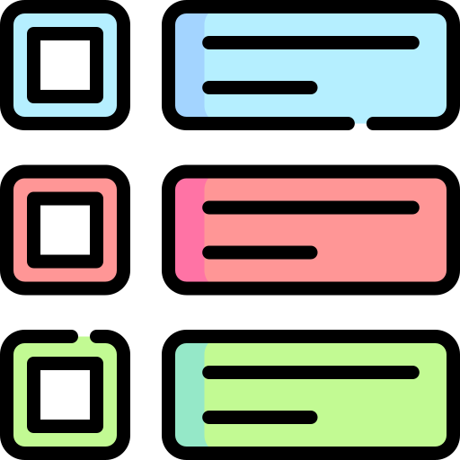
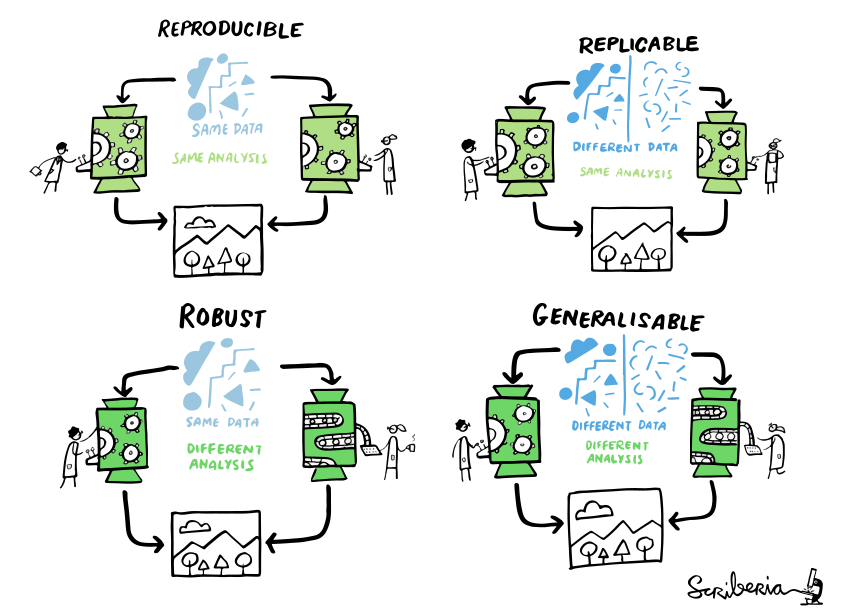

QML
Home
Course schedule
Map
Notebook
Challenges
Assessment
Extra
Categories
All
(43)
The Adventurer’s Notebook
Basic computer literacy
In the tutorial last week you’ve been playing around with R, RStudio and R scripts.
Stefano Coretta
Jun 28, 2023
Data types and reading data in R
Learn about types of data and how to import data in R
Stefano Coretta
Jun 28, 2023
Statistical variables
Learn about the type of statistical variables
Stefano Coretta
Sep 12, 2023

Statistical summaries
Learn about descriptive summary measures
Stefano Coretta
Sep 13, 2023
Research Methods and Hodotics
Research Methods are about the theory, methods and practice of conducting research
Stefano Coretta
Jun 3, 2024
Introduction to regression models (Part I)
Learn the basics of regression models, a powerful and flexible, yet simple, way of modelling data
Stefano Coretta
Jun 3, 2024
R basics
Learn the basics of R, a statistical programming language.
Stefano Coretta
Jun 3, 2024
R Troubleshooting
Learn about common R mistakes and where to find help
Stefano Coretta
Jun 10, 2024
Regression: Indexing of categorical predictors
Learn about indexing of categorical predictors in regression models
Stefano Coretta
Jun 25, 2024
Introduction to Quarto
Learn how to write dynamic documents with both text and code using Quarto
Stefano Coretta
Jun 27, 2024
R packages
Learn how to add functionality to R with packages
Stefano Coretta
Jun 27, 2024
Plotting basics
Learn the basics of plotting in R with ggplot2
Stefano Coretta
Jun 27, 2024

Reading multiple data files
An important skill to learn is how to read multiple files at once and save the output into a single tibble/data frame.
Jul 10, 2024
Wrangling data with R
Learn the basics of wrangling data with R
Stefano Coretta
Jul 15, 2024
Pivoting
Learn how to change the format of data tables from long to wide and viceversa using the pivot functions from tidyr
Stefano Coretta
Jul 15, 2024
Mutate data
Learn about mutating data using the tidyverse
Stefano Coretta
Jul 15, 2024
Bar charts
Bar charts
are useful when you are counting things. For example:
Jul 15, 2024
Filter data
Data transformation
is a fundamental aspect of data analysis.
Stefano Coretta
Jul 15, 2024
Introduction to regression models (Part II): include numeric predictors
Learn how to include numeric predictors in your regression models
Stefano Coretta
Jul 26, 2024
Introduction to regression models (Part III): include categorical predictors
Learn how to include categorical predictors in your regression models
Stefano Coretta
Jul 28, 2024
Regression models: working with MCMC draws
Learn how extract, wrangle and plot MCMC posterior draws
Stefano Coretta
Aug 5, 2024
Regression models: interactions
Add and interpret interactions in regression models
Stefano Coretta
Aug 8, 2024
Regression models: interactions between categorical predictors
Add and interpret interactions of two categorical predictors
Stefano Coretta
Aug 15, 2024
Regression: binary outcome variables
Learn how to fit regression models with binary outcome variable using the Bernoulli/binomial distribution
Stefano Coretta, Elizabeth Pankratz
Sep 9, 2024
Introduction to plotting
Learn about basic principles of good graphs
Stefano Coretta
Sep 12, 2024
Faceting plots
Sometimes we might want to separate the data into separate panels within the same plot.
Sep 13, 2024
Density plots
Density plots
show the distribution (i.e. the probability density) of the values of a continuous variable
.
Sep 13, 2024
Advanced plotting
In this tutorial, you can go through the different sections in any order you like and you can pick and choose which sections you want to work on.
Note that you should…
Sep 13, 2024
Quantitative data analysis
Learn more about quantitative data analysis
Stefano Coretta
Sep 14, 2024
Inference and uncertainty
Learn about the inference process and the uncertainty that comes with it
Stefano Coretta
Sep 14, 2024
Empirical research and research context
Learn more about empirical research and the research context
Stefano Coretta
Sep 14, 2024
Research questions and hypotheses
Learn more about research questions, hypotheses and how to formulate them
Stefano Coretta
Sep 14, 2024
What is statistics?
Learn about the inference process and the uncertainty that comes with it
Stefano Coretta
Sep 14, 2024
File management
A
Data Management Plan
(DMP) covers anything related to data types, their volume (size), how you will acquire or collect them, where and how you will store them, and aspects…
Stefano Coretta
Sep 15, 2024
Research project management
Managing a research project, whether it’s a solo project like a dissertation or it’s a large-scale project with many people, involves a lot of project management skills.
Stefano Coretta
Sep 15, 2024

Reproducibility and replicability
Learn about the meaning of reproducible, replicable, robust and generalisable research
Stefano Coretta
Sep 15, 2024
Machine Learning
An introduction to Machine Learning and where to learn abou it
Stefano Coretta
Sep 17, 2024
R scripts
Learn about how to organise your code in R scripts
Stefano Coretta
Sep 18, 2024
Two statistical approaches to inference: Frequentist and Bayesian statistics
A conceptual introduction to the frequentist and Bayesian approaches to statistical inference
Stefano Coretta
Sep 19, 2024
Frequentist statistics and p-values
Learn about p-values and how to avoid common interpretation pitfalls
Stefano Coretta
Sep 27, 2024
Regression models: interactions between numeric predictors
Add and interpret interactions of two numeric predictors
Elizabeth Pankratz, Stefano Coretta
Oct 2, 2024
Catalogues and tips for R plots
The book
Fundamentals of Data Visualisation
by Wilke is a good introduction to data visualisation principles. You can find the book online here: Fundamentals of Data…
Oct 23, 2024
Interactive plotting with Plotly
Plotly is an Open Source graphing system, with interfaces to major languages like Python and R.
Oct 23, 2024
No matching items